전기기사 (2014-03-02 기출문제)
1과목: 전기자기학
1. 전기 쌍극자에 대한 설명 중 옳은 것은?
- 반경 방향의 전계성분은 거리의 제곱에 반비례
- 전체 전계의 세기는 거리의 3승에 반비례
- 전위는 거리에 반비례
- 전위는 거리의 3승에 반비례
(정답률: 78%)

2. 간격에 비해서 충분히 넗은 평행판 콘덴서의 판 사이에 비유전율 εs인 유전체를 채우고 외부에서 판에 수직방향으로 전계 E0 를 가할 때 분극전하에 의한 전계의 세기는 몇 [V/m]인가?
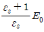
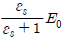
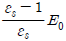
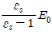
(정답률: 69%)
3. 공기 중에 있는 지름 2[m]의 구도체에 줄 수 있는 최대 전하는 약 몇 [C]인가? (단, 공기의 절연내력은 3000[kV/m]이다.)
- 5.3×10-4
- 3.33×10-4
- 2.65×10-4
- 1.67×10-4
(정답률: 61%)
4. 와전류손(eddy current loss)에 대한 설명으로 옳은 것은?
- 도전율이 클수록 작다.
- 주파수에 비례한다.
- 최대자속밀도의 1.6승에 비례한다.
- 주파수의 제곱에 비례한다.
(정답률: 62%)
5. 방송국 안테나 출력이 W[W]이고 이로부터 진공 중에 r[m] 떨어진 점에서 자계의 세기의 실효치 H 는 몇 [A/m]인가?
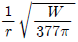
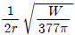
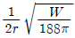
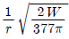
(정답률: 76%)
6. 평행판 콘덴서의 극판 사이에 유전율이 각각 ε1, ε2 인 두 유전체를 반씩 채우고 극판 사이에 일정한 전압을 걸어 줄때 매질 (1), (2) 내의 전계의 세기 E1, E2 사이에 성립하는 관계로 옳은 것은?
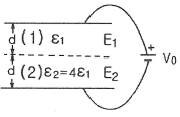
- E2 = 4E1
- E2 = 2E1
- E2 = E1/4
- E2 = E1
(정답률: 65%)
7. 단면적 S , 길이 l(엘), 투자율 μ 인 자성체의 자기회로에 권선을 N 회 감아서 I 의 전류를 흐르게 할 때 자속은?
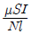
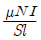
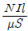
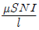
(정답률: 85%)
8. 손실유전체(일반매질)에서의 고유임피던스는?(복원 오류로 보기 오류로 1, 3번 보기가 같습니다. 참고하세요)
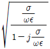
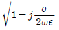
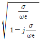
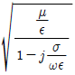
(정답률: 64%)
9. 자기 감자율 N=2.5×10-3, 비투자율 μs = 100 의 막대형 자성체를 자계의 세기 H=500[AT/m]의 평등자계 내에 놓았을 때 자화의 세기는 약 몇 [Wb/m2]인가?
- 4.98×10-2
- 6.25×10-2
- 7.82×10-2
- 8.72×10-2
(정답률: 35%)
10. 다음 설명 중 옳지 않은 것은?
- 전류가 흐르고 있는 금속선에 있어서 임의 두 점간의 전위차는 전류에 비례한다.
- 저항의 단위는 옴[Ω]을 사용한다.
- 금속선의 저항 R 은 길이 l 에 반비례한다.
- 저항률(p)의 역수를 도전율이라고 한다.
(정답률: 77%)
11. 전속밀도가 D=e-2y(axsin2x+aycos2x)[C/m2] 일 때 전속의 단위 체적당 발산량[C/m3]은?
- 2e-2ycos2x
- 4e-2ycos2x
- 0
- 2e-2y(sin2x+cos2x)
(정답률: 62%)
12. x ＜ 0 영역에는 자유공간, x ＞ 0 영역에는 비유전율 εs=2인 유전체가 있다. 자유공간에서 전계 E=10ax가 경계면에 수직으로 입사한 경우 유전체 내의 전속밀도는?
- 5ε0ax
- 10ε0ax
- 15ε0ax
- 20ε0ax
(정답률: 48%)
13. 평면도체 표면에서 d[m] 거리에 점전하 Q[C] 이 있을때 이 전하를 무한원점까지 운반하는데 필요한 일[J]은?
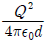
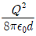
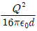
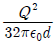
(정답률: 79%)
14. 대지면에 높이 h 로 평행하게 가설된 매우 긴 선전하가 지면으로부터 받는 힘은?
- h2에 비례한다.
- h2에 반비례한다.
- h에 비례한다.
- h에 반비례한다.
(정답률: 71%)
15. 그림과 같이 균일하게 도선을 감은 권수 N , 단면적 S[m2], 평균길이 l(엘)[m]인 공심의 환상솔레노이드 I [A]의 전류를 흘렸을 때 자기인덕턴스 L[H]의 값은?
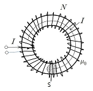
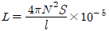
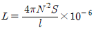
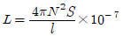
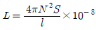
(정답률: 78%)
16. 다음 ( )안에 들어갈 내용으로 옳은 것은?
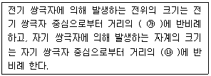
- (가) 제곱, (나) 제곱
- (가) 제곱, (나) 세제곱
- (가) 세제곱, (나) 제곱
- (가) 세제곱, (나) 세제곱
(정답률: 76%)
17. 자기인덕턴스 L1, L2와 상호인덕턴스 M 사이의 결합계수는? (단, 단위는 [H]이다.)
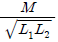
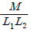
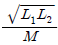
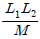
(정답률: 83%)
18. 정전계와 정자계의 대응관계가 성립되는 것은?
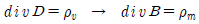
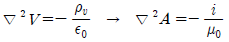
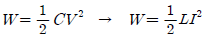
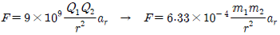
(정답률: 72%)
19. 반지름 a[m], 단위 길이당 권수 N, 전류 I[A]인 무한 솔레노이드 내부 자계의 세기 [A/m]는?
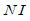
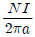
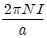
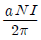
(정답률: 51%)
20. 무한장 직선형 도선에 I[A]의 전류가 흐를 경우 도선으로 부터 R[m] 떨어진 점의 자속밀도 B[Wb/m2]는?
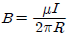
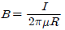
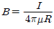
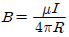
(정답률: 73%)
2과목: 전력공학
21. 그림의 F 점에서 3상 단락고장이 생겼다. 발전기 쪽에서본 3상 단락전류는 몇 [kA]가 되는가? (단, 154[kV] 송전선의 리액턴스는 1000[MVA]를 기준으로 하여 2[%/km]이다.)
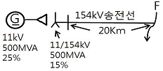
- 43.7
- 47.7
- 53.7
- 59.7
(정답률: 39%)
22. 배전계통에서 부등률이란?
- 최대수용전력 / 부하설비용량
- 부하의평균전력의합 / 부하설비의최대전력
- 최대부하시의설비용량 / 정격용량
- 각수용가의최대수용전력의합 / 합성최대수용전력
(정답률: 69%)
23. 최대수용전력이 45×103[kW]인 공장의 어느 하루의 소비 전력량이 480×103[kWh]라고 한다. 하루의 부하율은 몇 [%]인가?
- 22.2
- 33.3
- 44.4
- 66.6
(정답률: 67%)
24. 원자력 발전소에서 비등수형 원자로에 대한 설명으로 틀린 것은?
- 연료로 농축 우라늄을 사용한다.
- 감속재로 헬륨 액체금속을 사용한다.
- 냉각재로 경수를 사용한다.
- 물을 원자로 내에서 직접 비등시킨다.
(정답률: 60%)
25. 154[kV] 송전계통의 뇌에 대한 보호에서 절연강도의 순서가 가장 경제적이고 합리적인 것은?
- 피뢰기 → 변압기코일 → 기기부싱 → 결합콘덴서 → 선로애자
- 변압기코일 → 결합콘덴서 → 피뢰기 → 선로애자 → 기기부싱
- 결합콘덴서 → 기기부싱 → 선로애자 → 변압기코일 → 피뢰기
- 기기부싱 → 결합콘덴서 → 변압기코일 → 피뢰기 → 선로애자
(정답률: 78%)
26. 1차 변전소에서 가장 유리한 3권선 변압기 결선은?
- △-Y-Y
- Y-△-△
- Y-Y-△
- △-Y-△
(정답률: 64%)
27. 그림과 같은 3상 무부하 교류발전기에서 a상이 지락된 경우 지락전류는 어떻게 나타내는가?
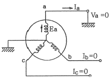
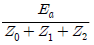
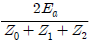
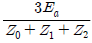
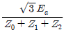
(정답률: 73%)
28. 다음 중 가공 송전선에 사용하는 애자련 중 전압부담이 가장 큰 것은?
- 전선에 가장 가까운 것
- 중앙에 있는 것
- 철탑에 가장 가까운 것
- 철탑에서 1/3 지점의 것
(정답률: 68%)
29. 파동임피던스 Z1=500[Ω], Z2=300[Ω]인 두 무손실 선로 사이에 그림과 같이 저항 R을 접속하였다. 제 1선로에서 구형파가 진행하여 왔을 때 무반사로 하기 위한 R의 값은 몇 [Ω]인가?
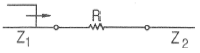
- 100
- 200
- 300
- 500
(정답률: 77%)
30. 유효접지계통에서 피뢰기의 정격전압을 결정하는데 가장 중요한 요소는?
- 선로 애자련의 충격섬락전압
- 내부 이상전압 중 과도이상전압의 크기
- 유도뢰의 전압의 크기
- 1선 지락고장시 건전상의 대지전위
(정답률: 56%)
31. 부하전류 차단이 불가능한 전력개폐 장치는?
- 진공차단기
- 유입차단기
- 단로기
- 가스차단기
(정답률: 81%)
32. 송전 선로의 안정도 향상대책과 관계가 없는 것은?
- 속응 여자방식 채용
- 재폐로 방식의 채용
- 리액턴스 감소
- 역률의 신속한 조정
(정답률: 68%)
33. 다음 중 환상선로의 단락보호에 주로 사용하는 계전방식은?
- 비율차동계전방식
- 방향거리계전방식
- 과전류계전방식
- 선택접지계전방식
(정답률: 64%)
34. 직렬콘덴서를 선로에 삽입할 때의 이점이 아닌 것은?
- 선로의 인덕턴스를 보상한다.
- 수전단의 전압강하를 줄인다.
- 정태안정도를 증가한다.
- 송전단의 역률을 개선한다.
(정답률: 57%)
35. 화력발전소에서 재열기의 사용 목적은?
- 공기를 가열한다.
- 급수를 가열한다.
- 증기를 가열한다.
- 석탄을 건조하다.
(정답률: 77%)
36. 송ㆍ배전 전선로에서 전선의 진동으로 인하여 전선이 단선되는 것을 방지하기 위한 설비는?
- 오프셋
- 크램프
- 댐퍼
- 초호환
(정답률: 79%)
37. 배전선의 전력손실 경감 대책이 아닌 것은?(오류 신고가 접수된 문제입니다. 반드시 정답과 해설을 확인하시기 바랍니다.)
- 피더(feeder) 수를 줄인다.
- 역률을 개선한다.
- 배전 전압을 높인다.
- 부하의 불평형을 방지한다.
(정답률: 70%)
38. 배전선로의 배전 변압기 탭을 선정함에 있어 틀린 것은?
- 중부하시 탭 변경점 직전의 저압선 말단 수용가의 전압을 허용전압 변동의 하한보다 저하시키지 않아야 한다.
- 중부하시 탭 변경점 직후 변압기에 접속된 수용가 전압을 허용전압 변동의 상한보다 초과 시키지 않아야 한다.
- 경부하시 변전소 송전전압을 저하시 최초의 탭 변경점 직전의 저압선 말단 수용가의 전압을 허용변동의 하한보다 저하 시키지 않아야 한다.
- 경부하시 탭 변경점 직후의 변압기에 접속된 전압을 허용 전압 변동의 하한보다 초과하지 않아야 한다.
(정답률: 55%)
39. 3상 3선식 송전선로가 소도체 2개의 복도체 방식으로 되어 있을 때 소도체의 지름 8[cm], 소도체 간격 36[cm], 등 가선간거리 120[cm]인 경우에 복도체 1[km]의 인덕턴스는 약 몇 [mH]인가?
- 0.4855
- 0.5255
- 0.6975
- 0.9265
(정답률: 49%)
40. 각 전력계통을 연계할 경우의 장점으로 틀린 것은?
- 각 전력계통의 신뢰도가 증가한다.
- 경제급전이 용이하다.
- 단락용량이 작아진다.
- 주파수의 변화가 작아진다.
(정답률: 71%)
3과목: 전기기기
41. 정류회로에서 평활회로를 사용하는 이유는?
- 출력전압의 맥류분을 감소하기 위해
- 출력전압의 크기를 증가시키기 위해
- 정류전압의 직류분을 감소하기 위해
- 정류전압을 2배로 하기 위해
(정답률: 73%)
42. 평형 3상전류를 측정하려고 60/5[A]의 변류기 2대를 그림과 같이 접속했더니 전류계에 2.5[A]가 흘렀다. 1차 전류는 몇 [A]인가?
- 5
- 5√3
- 10
- 10√3
(정답률: 51%)
43. 1차측 권수가 1500인 변압기의 2차측에 16[Ω]의 저항을 접속하니 1차측에서는 8[kΩ]으로 환산되었다. 2차측 권수는?
- 약 67
- 약 87
- 약 107
- 약 207
(정답률: 61%)
44. 유도전동기의 부하를 증가시켰을 때 옳지 않은 것은?
- 속도는 감소한다.
- 1차 부하전류는 감소한다.
- 슬립은 증가한다.
- 2차 유도기전력은 증가한다.
(정답률: 45%)
45. 스텝 모터에 대한 설명 중 틀린 것은?
- 가속과 감속이 용이하다.
- 정역전 및 변속이 용이하다.
- 위치제어시 각도 오차가 작다.
- 브러시 등 부품수가 많아 유지보수 필요성이 크다.
(정답률: 71%)
46. 단권변압기의 설명으로 틀린 것은?
- 1차권선과 2차권선의 일부가 공통으로 사용된다.
- 분로권선과 직렬권선으로 구분된다.
- 누설자속이 없기 때문에 전압변동률이 작다.
- 3상에는 사용할 수 없고 단상으로만 사용한다.
(정답률: 73%)
47. 권선형 유도전동기의 기동법에 대한 설명 중 틀린 것은?
- 기동시 2차 회로의 저항을 크게 하면 기동시에 큰 토크를 얻을 수 있다.
- 기동시 2차회로의 저항을 크게 하면 기동시에 기동 전류를 억제 할 수 있다.
- 2차 권선 저항을 크게 하면 속도 상승에 따라 외부저항이 증가한다.
- 2차 권선 저항을 크게 하면 운전 상태의 특성이 나빠진다.
(정답률: 41%)
48. 다이오드를 사용한 정류회로에서 다이오드를 여러개 직렬로 연결하면?
- 고조파 전류를 감소시킬 수 있다.
- 출력 전압의 맥동률을 감소시킬 수 있다.
- 입력 전압을 증가시킬 수 있다.
- 부하 전류를 증가시킬 수 있다.
(정답률: 54%)
49. 3상 유도 전동기의 슬립이 s < 0 인 경우를 설명한 것으로 틀린 것은?
- 동기 속도 이상이다.
- 유도 발전기로 사용된다.
- 유도 전동기 단독으로 동작이 가능하다.
- 속도를 증가시키면 출력이 증가한다.
(정답률: 57%)
50. 우리나라 발전소에 설치되어 3상 교류를 발생하는 발전기는?
- 동기 발전기
- 분권 발전기
- 직권 발전기
- 복권 발전기
(정답률: 70%)
51. 계자저항 50[Ω], 계자전류 2[A], 전기자 저항 3[Ω]인 분권 발전기가 무부하로 정격속도로 회전할 때 유기기전력[V]은?
- 106
- 112
- 115
- 120
(정답률: 74%)
52. △결선 변압기의 한 대가 고장으로 제거되어 V결선으로 전력을 공급할 때, 고장전 전력에 대하여 몇 [%]의 전력을 공급할 수 있는가?
- 81.6
- 75.0
- 66.7
- 57.7
(정답률: 72%)
53. 다음직류 전동기 중에서 속도 변동률이 가장 큰 것은?
- 직권 전동기
- 분권 전동기
- 차동 복권 전동기
- 가동 복권 전동기
(정답률: 71%)
54. 동기 전동기에 설치된 제동권선의 효과는?
- 정지시간의 단축
- 출력 전압의 증가
- 기동 토크의 발생
- 과부하 내량의 증가
(정답률: 61%)
55. 동기 전동기의 V 특성곡선(위상특성 곡선)에서 무부하 곡선은?
- A
- B
- C
- D
(정답률: 70%)
56. 직류 분권 전동기의 공급 전압이 V[V], 전기자 전류 Ia[A], 전기자 저항 Ra[Ω], 회전수 N[rpm] 일 때 발생토크는 몇 [kg・m]인가?
(정답률: 56%)
57. 3상 유도전동기에서 회전력과 단자 전압의 관계는?
- 단자 전압과 무관하다
- 단자 전압에 비례한다
- 단자 전압의 2승에 비례한다
- 단자 전압의 2승에 반비례한다
(정답률: 48%)
58. 220[V], 10[A], 전기자 저항이 1[Ω], 회전수가 1800[rpm]인 전동기의 역기전력은 몇 [V]인가?(오류 신고가 접수된 문제입니다. 반드시 정답과 해설을 확인하시기 바랍니다.)
- 90
- 140
- 175
- 210
(정답률: 68%)
59. 3상 직권 정류자 전동기에서 중간 변압기를 사용하는 주된 이유는?
- 발생 토크를 증가시키기 위해
- 역회전 방지를 위해
- 직권 특성을 얻기 위해
- 경부하시 급속한 속도상승 억제를 위해
(정답률: 68%)
60. 동기 조상기의 계자를 과여자로 해서 운전할 경우 틀린 것은?
- 콘덴서로 작용한다.
- 위상이 뒤진 전류가 흐른다.
- 송전선의 역률을 좋게한다.
- 송전선의 전압 강하를 감소시킨다.
(정답률: 62%)
4과목: 회로이론 및 제어공학
61. Routh 안정도 판별법에 의한 방법 중 불안정한 제어계의 특성 방정식은?
- S3+2S2+3S+4=0
- S3+S2+5S+4=0
- S3+4S2+5S+2=0
- S3+3S2+2S+10=0
(정답률: 73%)
62. 어떤 제어계에 단위 계단 입력을 가하였더니 출력이 1-e-2t로 나타났다. 이 계의 전달함수는?
(정답률: 32%)
63. 다음 중 z변환함수 에 대응되는 라플라스 변환 함수는?
(정답률: 64%)
64. 그림과 같은 블록선도에서 C(s)/R(s) 의 값은?
(정답률: 73%)
65. 다음 과도 응답에 관한 설명 중 틀린 것은?
- 지연 시간은 응답이 최초로 목표값의 50%가 되는데 소요되는 시간이다.
- 백분율 오버슈트는 최종 목표값과 최대 오버슈트와의 비를 %로 나타낸 것이다.
- 감쇠비는 최종 목표값과 최대 오버슈트와의 비를 나타낸 것이다.
- 응답시간은 응답이 요구하는 오차 이내로 정착되는데 걸리는 시간이다.
(정답률: 59%)
66. 이득이 K인 시스템의 근궤적을 그리고자 한다. 다음 중 잘못된 것은?
- 근궤적의 가지수는 극(Pole)의 수와 같다.
- 근궤적은 K=0일 때 극에서 출발하고 K=∞일 때 영점에 도착한다.
- 실수축에서 이득 K가 최대가 되게 하는 점이 이탈점이 될 수 있다.
- 근궤적은 실수축에 대칭이다.
(정답률: 59%)
67. 단위계단 입력신호에 대한 과도 응답은?
- 임펄스 응답
- 인디셜 응답
- 노멀 응답
- 램프 응답
(정답률: 67%)
68. 그림과 같은 RC 회로에 단위 계단 전압을 가하면 출력 전압은?
- 아무 전압도 나타나지 않는다.
- 처음부터 계단 전압이 나타난다.
- 계단 전압에서 지수적으로 감쇠한다.
- 0부터 상승하여 계단전압에 이른다.
(정답률: 51%)
69. 다음과 같은 진리표를 갖는 회로의 종류는?
- AND
- NAND
- NOR
- EX-OR
(정답률: 75%)
70. 자동제어의 분류에서 엘리베이터의 자동제어에 해당하는 제어는?
- 추종제어
- 프로그램 제어
- 정치 제어
- 비율 제어
(정답률: 72%)
71. RLC 직렬공진에서 3고조파의 공진주파수 f(hz)는?
(정답률: 67%)
72. RLC 직렬회로에 를 인가할 때 가 흐르는 경우 소비되는 전력은 약 몇 [W]인가?
- 361
- 623
- 720
- 1445
(정답률: 49%)
73. 세 변의 저항 Ra=Rb=Rc=15[Ω]인 Y결선 회로가 있다. 이것과 등가인 Δ결선 회로의 각 변의 저항[Ω]은?
- 135
- 45
- 15
- 5
(정답률: 67%)
74. f(t)=3t2 의 라플라스 변환은?
(정답률: 64%)
75. 다음과 같은 회로에서 t=0+에서 스위치 K를 닫았다. i1(0+), i2(0+)는 얼마인가? (단, C의 초기전압과 L의 초기 전류는 0이다.)
(정답률: 57%)
76. 모든 초기값을 0으로 할 때, 입력에 대한 출력의 비는?
- 전달 함수
- 충격 함수
- 경사 함수
- 포물선 함수
(정답률: 69%)
77. 그림과 같은 회로에서 저항 0.2[Ω]에 흐르는 전류는 몇 [A]인가?
- 0.4
- -0.4
- 0.2
- -0.2
(정답률: 42%)
78. 분포정수 선로에서 위상정수를 β[rad/sec]라 할 때 파장은?
(정답률: 74%)
79. 어떤 2단자 회로에 단위 임펄스 전압을 가할 때 2e-t+3e-2t[A]의 전류가 흘렀다. 이를 회로로 구성하면? (단, 각 소자의 단위는 기본 단위로 한다.)
(정답률: 54%)
80. 그림과 같은 T형 회로에서 4단자 정수 중 D값은?
(정답률: 71%)
5과목: 전기설비기술기준 및 판단기준
81. 옥내 배선의 사용전압이 220V인 경우 금속관 공사의 기술기준으로 옳은 것은?(오류 신고가 접수된 문제입니다. 반드시 정답과 해설을 확인하시기 바랍니다.)
- 금속관과 접속부분의 나사는 3턱 이상으로 나사 결합을 하였다.
- 전선은 옥외용 비닐절연전선을 사용하였다.
- 콘크리트에 매설하는 전선관의 두께는 1.0mm를 사용하였다.
- 금속관에는 제 3종 접지 공사를 하였다.
(정답률: 52%)
82. 식물 재배용 전기온상에 사용하는 전열 장치에 대한 설명으로 틀린 것은?
- 전로의 대지 전압은 300V 이하
- 발열선은 90℃가 넘지 않도록 시설 할 것
- 발열선의 지지점간 거리는 1.0m 이하일 것
- 발열선과 조영재사이의 이격거리 2.5cm 이상일 것
(정답률: 64%)
83. 대지로부터 절연을 하는 것이 기술상 곤란하여 절연을 하지 않아도 되는 것은?
- 항공 장애등
- 전기로
- 옥외 조명등
- 에어콘
(정답률: 60%)
84. 수소 냉각식 발전기 및 이에 부속하는 수소냉각 장치에 관한 시설이 잘못된 것은?
- 발전기는 기밀구조의 것이고 또한 수소가 대기압에서 폭발하는 경우에 생기는 압력에 견디는 강도를 가지는 것일것
- 발전기 안의 수소의 순도가 70% 이하로 저하한 경우에 이를 경보하는 장치를 시설할 것
- 발전기 안의 수소의 온도를 계측하는 장치를 시설할 것
- 발전기 안의 수소의 압력을 계측하는 장치 및 그 압력이 현저히 변동한 경우에 이를 경보하는 장치를 시설할 것
(정답률: 70%)
85. 최대사용전압이 69kV인 중성점 비접지식 전로의 절연내력 시험 전압은 몇 kV인가?
- 63.48
- 75.9
- 86.25
- 103.5
(정답률: 54%)
86. 저압 옥내 배선용 전선으로 적합한 것은?
- 단면적이 0.8mm2 이상의 미네럴인슈레이션 케이블
- 단면적이 1.0mm2 이상의 미네럴 인슈레이션 케이블
- 단면적이 0.5mm2 이상의 연동선
- 단면적이 2.0mm2 이상의 연동선
(정답률: 58%)
87. 백열전등 또는 방전등에 전기를 공급하는 옥내전로의 대지전압은 몇 V 이하인가?
- 120
- 150
- 200
- 300
(정답률: 71%)
88. 마그네슘 분말이 존재하는 장소에서 전기설비가 발화원이 되어 폭발할 우려가 있는 곳에서의 저압옥내 전기 설비 공사는?
- 캡타이어 케이블
- 합성 수지관 공사
- 애자사용 공사
- 금속관 공사
(정답률: 60%)
89. 소맥분, 전분, 유황 등의 가연성 분진이 존재하는 공장에 전기설비가 발화원이 되어 폭발할 우려가 있는 곳의 저압 옥내배선에 적합하지 못한 공사는? (단, 각종 전선관 공사 시 관의 두께는 모두 기준에 적합한 것을 사용한다.)
- 합성 수지관 공사
- 금속관 공사
- 가요 전선관 공사
- 케이블 공사
(정답률: 51%)
90. 가공전선로의 지지물에 사용하는 지선의 시설과 관련하여 다음 중 옳지 않은 것은?
- 지선의 안전율은 2.5이상, 허용 인장하중의 최저는 3.31kN으로 할 것
- 지선에 연선을 사용하는 경우 소선 3가닥 이상의 연선일것
- 지선에 연선을 사용하는 경우 소선의 지름이 2.6mm 이상의 금속선을 사용한 것일 것
- 가공전선로의 지지물로 사용하는 철탑은 지선을 사용하여 그 강도를 분담시키지 않을 것
(정답률: 62%)
91. 옥내 저압 배선을 가요전선관 공사에 의해 시공하고자 할때 전선을 단선으로 사용한다면 그 단면적은 최대 몇 mm2 이하이어야 하는가?
- 2.5
- 4
- 6
- 10
(정답률: 42%)
92. 풀용 수중 조명등에서 절연 변압기 2차측 전로의 사용전압이 30V 이하인 경우 접지공사의 종류는?(오류 신고가 접수된 문제입니다. 반드시 정답과 해설을 확인하시기 바랍니다.)
- 제 1종 접지
- 제 2종 접지
- 제 3종 접지
- 특별 제 3종 접지
(정답률: 35%)
93. 저압의 옥측 배선을 시설 장소에 따라 시공할 때 적절하지 못한 것은?
- 버스덕트 공사를 철골조로 된 공장 건물에 시설
- 합성수지관 공사를 목조로 된 건출물에 시설
- 금속몰드 공사를 목조로 된 건축물에 시설
- 애자사용 공사를 전개된 장소에 있는 공장 건물에 시설
(정답률: 56%)
94. 가공전선로의 지지물 중 지선을 사용하여 그 강도를 분담 시켜서는 안되는 것은?
- 철탑
- 목주
- 철주
- 철근 콘크리트주
(정답률: 54%)
95. 고압 지중 케이블로서 직접 매설식에 의하여 콘크리트제, 기타 견고한 관 또는 트라프에 넣지 않고 부설할 수 있는 케이블은?
- 고무 외장 케이블
- 클로로프렌 외장 케이블
- 콤바인 덕트 케이블
- 미네럴 인슈레이션 케이블
(정답률: 66%)
96. 특고압가공전선로의 지지물로 사용하는 B종 철주, B종 철근 콘크리트주 또는 철탑의 종류에서 전선로 지지물의 양쪽 경간의 차가 큰 곳에 사용하는 것은?
- 각도형
- 인류형
- 내장형
- 보강형
(정답률: 67%)
97. 정격전류 20A인 배선용 차단기로 보호되는 저압 옥내 전로에 접속할 수 있는 콘센트 정격전류는 최대 몇 A인가?
- 15
- 20
- 22
- 25
(정답률: 53%)
98. 과전류 차단기로 저압 전로에 사용하는 퓨즈를 수평으로 붙인 경우 이 퓨즈는 정격전류의 몇 배의 전류에 견딜 수 있어야 하는가?
- 1.1
- 1.25
- 1.6
- 2
(정답률: 46%)
99. 고압 인입선을 다음과 같이 시설하였다. 기술기준에 맞지 않는 것은?
- 고압 가공인입선 아래에 위험 표시를 하고 지표상 3.5m의 높이에 설치하였다.
- 1.5m 떨어진 다른 수용가에 고압 연접 인입선을 시설하였다.
- 횡단 보도교 위에 시설하는 경우 케이블을 사용하여 노면상에서 3.5m의 높이에 시설하였다.
- 전선은 5mm 경동선과 동등한 세기의 고압 절연전선을 사용하였다.
(정답률: 54%)
100. 사용전압이 60[kV]이하인 특고압 가공전선로는 상시 정전 유도 작용에 의한 통신상의 장해가 없도록 시설하기 위하여 전화선로의 길이 12km마다 유도전류는 몇 μA 를 넘지 않도록 하여야하는가?
- 1
- 2
- 3
- 5
(정답률: 70%)